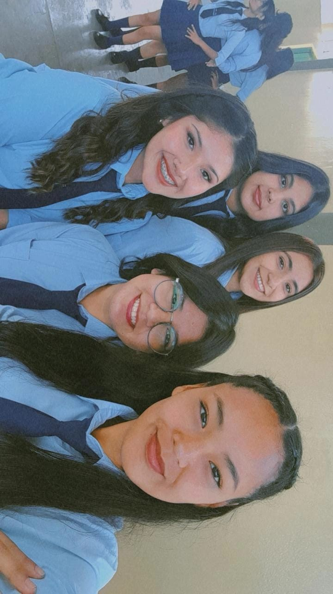

Tengo unas palabras que quería decirte...

Quería escribirte estas palabras porque siento que hay cosas que a veces no decimos lo suficiente, y vos sos una de esas personas a las que realmente quiero agradecer.
Quiero que sepas que fuiste una gran amiga durante la secundaria. Me quedo con todos los momentos, las risas, las charlas y cada pequeño recuerdo que compartimos.
Aunque quizás no nos conocimos desde hace tantos años como otras personas, siempre tuve esa sensación de que nuestra amistad venía de mucho antes, como si te conociera desde hace muchísimo tiempo.
Para mí nunca fuiste solamente una amiga. Siempre sentí que eras como una amiga-hermana, de esas personas con las que uno puede sentirse cómodo siendo uno mismo.
Y también podría decir que fuiste un poquito mi "mami" jajaja, por asi decirlo, por esa forma tuya de cuidar y estar pendiente de los demás. Esa forma tan especial que tenés de ser.
Y justamente eso es algo que espero que nunca cambies: tu manera tan única de ser vos misma.
No dejes que nadie te haga sentir que tenés que cambiar para encajar o para gustarle a los demás. Esa personalidad tuya, esa forma de cuidar, de hacer reír y de estar para las personas es justamente lo que te hace tan especial.
Me alegra muchísimo haber coincidido con vos en esta etapa de nuestras vidas. Quizás la secundaria termine y cada una siga su propio camino, pero espero que eso nunca haga que nuestra amistad se pierda.
Te quiero muchísimo y siempre voy a guardar un pedacito de nuestra secundaria con mucho cariño. Lamento no poder asistir a tu sorpresa pero me alegra saber que tenes amigos y amigas que te quieren y aprecian muchisimo. 💗
Nunca cambies esa forma tan única de ser vos. 🫶🏻
"No hace falta conocerse desde hace años para sentir que alguien forma parte de tu vida desde siempre." 💕